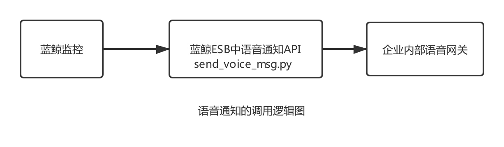

集成内部语音网关实现电话告警
特别感谢社区用户 Kevin 提供该文档.
情景
故障处理是运维的几大职能之一，重要告警不能漏告，通过微信、邮件、短信等通知方式无法触达，所以需要使用电话告警。
蓝鲸监控默认已支持腾讯云的语音网关，实现电话告警通知，但如果公司已有第三方(非腾讯云)的电话告警服务，该如何接入呢？
前提条件
- 开通好企业内部语音网关
- 掌握 蓝鲸 SaaS 开发，打开 腾讯运维开发实战课 马上学习
- 掌握 蓝鲸 API 网关开发
操作步骤
- 梳理逻辑
- 代码解读
- 电话告警测试
1. 梳理逻辑
对企业内部语音网关封装一个接口，改造蓝鲸 ESB 中语音通知 API 即可。
以下为语音通知的调用逻辑图。

2. 代码解读
2.1 封装企业内部语音网关接口
实现内部电话告警接口，并放到 send_voice_msg.py 同一层目录下。
本例中的接口：ums_alarm.ums_tools.send_phone(user_phone_list, content)
参数为电话电码列表、告警内容，返回值为调用结果(True / False)和接口的返回消息
2.2 改造蓝鲸 ESB 中语音通知 API
在蓝鲸 PaaS 所在机器的消息通知代码目录下，修改 send_voice_msg.py
source /data/install/utils.fc
ssh $APPO_IP
cd /data/bkce/open_paas/esb/components/generic/templates/cmsi/
注：企业版请将
bkce改成bkee
2.2.1 获取请求接口的数据
原有 send_voice_msg.py 文件已经实现了大部分内容，关键在于 Form 类中的 handle(self) 函数，这个函数已实现从请求接口的数据中获取告警接收人列表data['user_list_information']，另外只需要使用data['auto_read_message']获取告警信息即可。
# 公共语音接口/api/c/compapi/cmsi/send_voice_msg/请求参数示例
{
"bk_app_code": "esb_test",
"bk_app_secret": "xxx",
"bk_token": "xxx",
"auto_read_message": "This is a test",
"user_list_information": [{
"username": "admin",
"mobile_phone": "1234567890",
}]
}
2.2.2 调用企业内部语音告警接口
修改 #TODO: can be updated 之后的部分，全部注释掉。
使用上一步得到的告警信息 data['auto_read_message'] 和上面接口中得到 data['user_list_information'] ，根据实际情况组装后，以参数形式调用企业内部语音告警接口即可。
# TODO: can be updated
# -----------------实现下面的代码-----------------
# 取告警内容
v_content = data['auto_read_message']
# 获取用户手机列表
user_phone_list = [user_list['mobile_phone'] for user_list in data['user_list_information']]
# 调用接口，发送告警
ret, msg = ums_tools.send_phone(user_phone_list, v_content.encode('utf-8'))
if ret == True:
result = {
'result': True,
'data': msg,
'message': 'OK'
}
else:
result = {
'result': False,
'data': msg,
'message': 'Send voice error'
}
self.response.payload = result
完成代码，点击下载。
2.3 重启 PaaS
蓝鲸中控机上重启 PaaS ，使代码生效
/data/install/bkcec stop paas
/data/install/bkcec start paas
3. 电话告警测试
配置电话告警策略，触发告警，验证结果。

告警产生后，手机将收到语音告警电话。
不漏掉任何一个重要的告警。